Pascal's Triangle

One of the most interesting Number Patterns is Pascal's Triangle (named after Blaise Pascal, a famous French Mathematician and Philosopher).
To build the triangle, start with "1" at the top, then continue placing numbers below it in a triangular pattern.
Each number is the numbers directly above it added together.
(Here I have highlighted that 1+3 = 4)
Patterns Within the Triangle

Diagonals
The first diagonal is, of course, just "1"s
The next diagonal has the Counting Numbers (1,2,3, etc).
The third diagonal has the triangular numbers
(The fourth diagonal, not highlighted, has the tetrahedral numbers.)
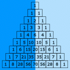
Symmetrical
The triangle is also symmetrical. The numbers on the left side have identical matching numbers on the right side, like a mirror image.
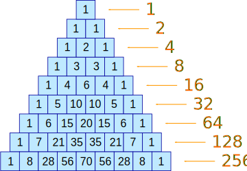
Horizontal Sums
What do you notice about the horizontal sums?
Is there a pattern?
They double each time (powers of 2).
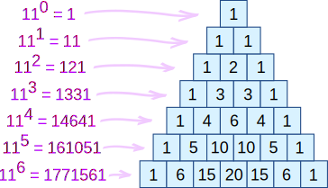
Exponents of 11
Each line is also the powers (exponents) of 11:
- 110=1 (the first line is just a "1")
- 111=11 (the second line is "1" and "1")
- 112=121 (the third line is "1", "2", "1")
- etc!
But what happens with 115 ? Simple! The digits just overlap, like this:
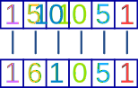
The same thing happens with 116 etc.
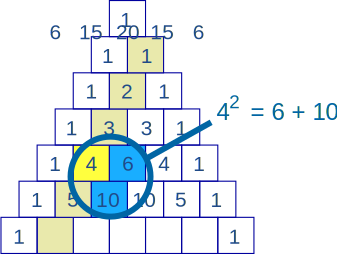
Squares
For the second diagonal, the square of a number is equal to the sum of the numbers next to it and below both of those.
Examples:
- 32 = 3 + 6 = 9,
- 42 = 6 + 10 = 16,
- 52 = 10 + 15 = 25,
- ...
There is a good reason, too ... can you think of it? (Hint: 42=6+10, 6=3+2+1, and 10=4+3+2+1)

Fibonacci Sequence
Try this: make a pattern by going up and then along, then add up the values (as illustrated) ... you will get the Fibonacci Sequence.
(The Fibonacci Sequence starts "0, 1" and then continues by adding the two previous numbers, for example 3+5=8, then 5+8=13, etc)

Odds and Evens
If we color the Odd and Even numbers, we end up with a pattern the same as the Sierpinski Triangle
Paths
Each entry is also the number of different paths from the top down.
Example: there is only one path from the top down to any "1"
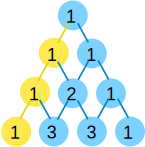
And we can see there are 2 different paths to the "2"
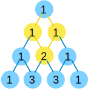
It is the same going upwards, there are 3 different paths from 3:
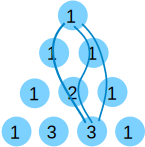
Your turn, see if you can find all the paths down to the "6":
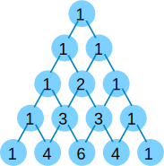
Using Pascal's Triangle
Heads and Tails
Pascal's Triangle shows us how many ways heads and tails can combine. This can then show us the probability of any combination.
For example, if you toss a coin three times, there is only one combination that will give three heads (HHH), but there are three that will give two heads and one tail (HHT, HTH, THH), also three that give one head and two tails (HTT, THT, TTH) and one for all Tails (TTT). This is the pattern "1,3,3,1" in Pascal's Triangle.
| Tosses | Possible Results (Grouped) | Pascal's Triangle |
|---|---|---|
| 1 | H T |
1, 1 |
| 2 |
HH HT TH TT |
1, 2, 1 |
| 3 |
HHH HHT, HTH, THH HTT, THT, TTH TTT |
1, 3, 3, 1 |
| 4 |
HHHH HHHT, HHTH, HTHH, THHH HHTT, HTHT, HTTH, THHT, THTH, TTHH HTTT, THTT, TTHT, TTTH TTTT |
1, 4, 6, 4, 1 |
| ... etc ... |
Example: What is the probability of getting exactly two heads with 4 coin tosses?
There are 1+4+6+4+1 = 16 (or 24=16) possible results, and 6 of them give exactly two heads. So the probability is 6/16, or 37.5%
Combinations
The triangle also shows us how many Combinations of objects are possible.
Example: You have 16 pool balls. How many different ways can you choose just 3 of them (ignoring the order that you select them)?
Answer: go down to the start of row 16 (the top row is 0), and then along 3 places (the first place is 0) and the value there is your answer, 560.
Here is an extract at row 16:
1 14 91 364 ... 1 15 105 455 1365 ... 1 16 120 560 1820 4368 ...
A Formula for Any Entry in The Triangle
In fact there is a formula from Combinations for working out the value at any place in Pascal's triangle:
|
It is commonly called "n choose k" and written like this: |
n!k!(n−k)! = (nk) |
Notation: "n choose k" can also be written C(n,k), nCk or nCk.
| ! |
The "!" is "factorial" and means to multiply a series of descending natural numbers. Examples:
|

So Pascal's Triangle could also be
an "n choose k" triangle like this one.
(Note that the top row is row zero
and also the leftmost column is zero)
Example: Row 4, term 2 in Pascal's Triangle is "6" ...
... let's see if the formula works:
Yes, it works! Try another value for yourself.
This can be very useful ... we can now find any value in Pascal's Triangle directly (without calculating the whole triangle above it).
Polynomials
Pascal's Triangle also shows us the coefficients in binomial expansion:
| Power | Binomial Expansion | Pascal's Triangle |
|---|---|---|
| 2 | (x + 1)2 = 1x2 + 2x + 1 | 1, 2, 1 |
| 3 | (x + 1)3 = 1x3 + 3x2 + 3x + 1 | 1, 3, 3, 1 |
| 4 | (x + 1)4 = 1x4 + 4x3 + 6x2 + 4x + 1 | 1, 4, 6, 4, 1 |
| ... etc ... |
The First 15 Lines
For reference, I have included row 0 to 14 of Pascal's Triangle
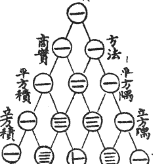
The Chinese Knew About It
This drawing is entitled "The Old Method Chart of the Seven Multiplying Squares". View Full Image
{kind=link}
It is from the front of Chu Shi-Chieh's book "Ssu Yuan Yü Chien" (Precious Mirror of the Four Elements), written in AD 1303 (over 700 years ago, and more than 300 years before Pascal!), and in the book it says the triangle was known about more than two centuries before that.
The Quincunx
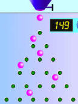
An amazing little machine created by Sir Francis Galton is a Pascal's Triangle made out of pegs. It is called The Quincunx.
Balls are dropped onto the first peg and then bounce down to the bottom of the triangle where they collect in little bins.
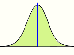
At first it looks completely random (and it is), but then we find the balls pile up in a nice pattern: the Normal Distribution.